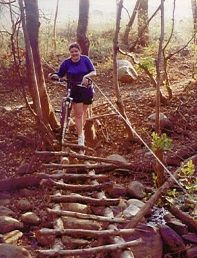
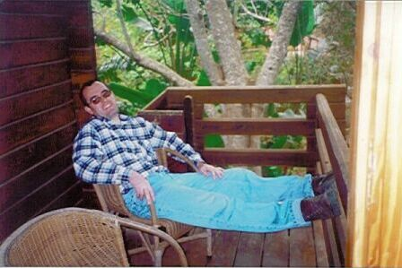

[Home] [Introduction] [Preperation] [Church] [Just Married] [Reception] [Honeymoon]
We spent a few days at Old Joe's Kaia, in the Schoomanskloof valley.
The river trail was about 2km long, but it was worth the time it took to complete it.

As we went on mountain bikes the trail was really difficult because
of obstacles in the way
The scenery was breathtaking and we had alot of fun until I fell. (We were almost back at the cabin by then,
so I was tired!)

Just before or after dinner it would be nice to sit on the 'stoep' of our cabin and listen to
the peacefulness surrounding us.
The Lowveld Botanical Gardens were not that far away, although on a sand road and the detour
through Nelspriut to get there, did take some time. The gardens were definitely something to see at that
time of the year. We walked through many different areas from the African rain forest right up to the Nelspruit
falls. We did make a stop at the tea garden, which was desperately needed. To sum up the outing, it was beautiful.
I will tell you about something I learnt, William will risk his life just to set up the camera for
a timed photo of us sitting together. Although it almost caused me to have a heart attack.
It was a lot of fun to bird watch, and lie around the pool on the hot days, we did try our
hand at swimming, although the water had freezing temperatures so it was difficult to stay in
longer than a few seconds at a time.
[Home] [Introduction] [Preperation] [Church] [Just Married] [Reception] [Honeymoon]